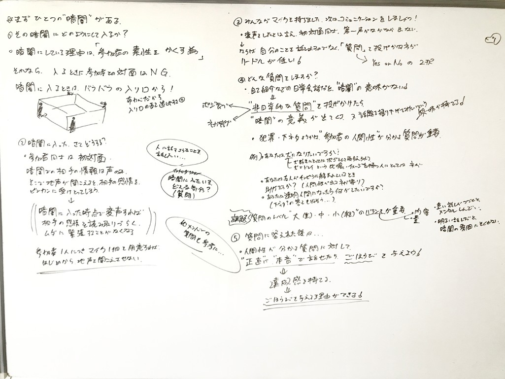

暗闇でおしゃべりしたい Kenny Pain

人と話したいけど、注目されたくない。
人の視線を感じない環境なら、緊張することなく話せるのではないかと考え「暗闇でおしゃべりしたい」を思いついた。
「暗闇」の中での私たちの声は加工される。
加工された声は素性を隠し、話す人と聞く人に程良い距離感を与える。
明かりがある日常生活では相手を知るためにまず自己紹介をするのが一般的。
しかし「暗闇」で素性を隠した相手と自己紹介をする必要はあるのだろうか。
「暗闇」だからこそできる本音の話や人には言いづらい話があると思う。
質問は人間性を探る「暗闇」に合ったお題と、敢えて明るい場所でもできるお題を設定。
「暗闇」という環境のもと、雰囲気が重くなり過ぎないよう質問のバランスを考えることが重要だと感じている。
アトラクション「暗闇でおしゃべり」／限定開催イベント「暗闇でおしゃべり会」参加者には記念品をプレゼント。
面白い話をしなきゃ、楽しませなきゃと相手を満足させることを意識し話すのではなく、正直に、素直に話せたことへの達成感を感じること、自分が満足できるよういろんな人と「暗闇でおしゃべりしたい」